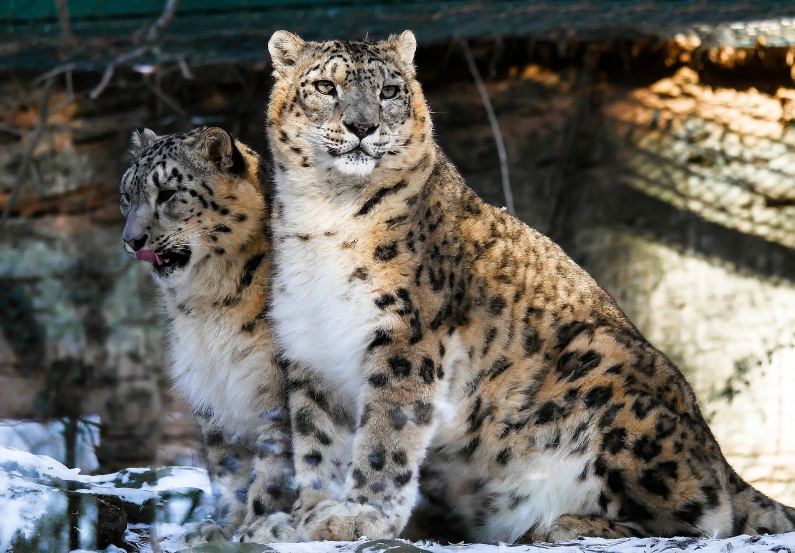
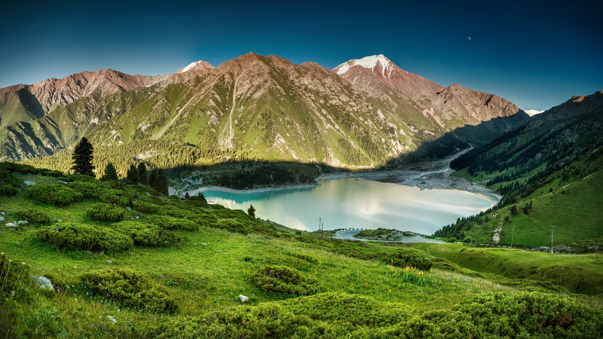
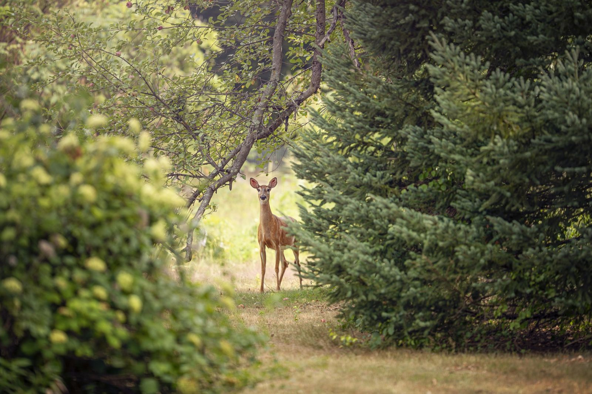
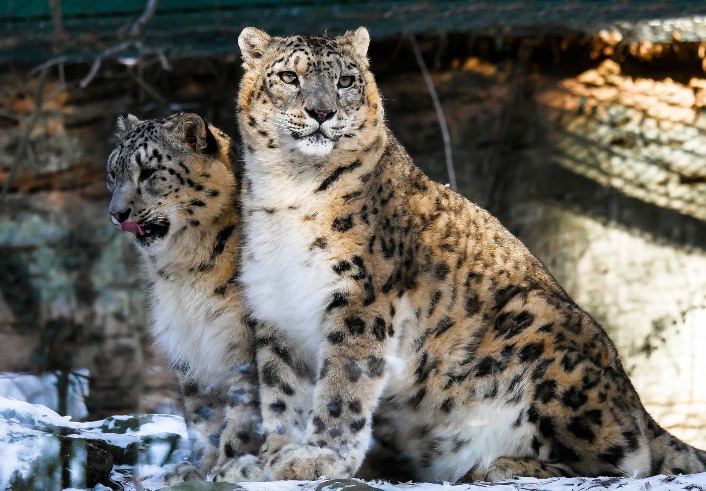
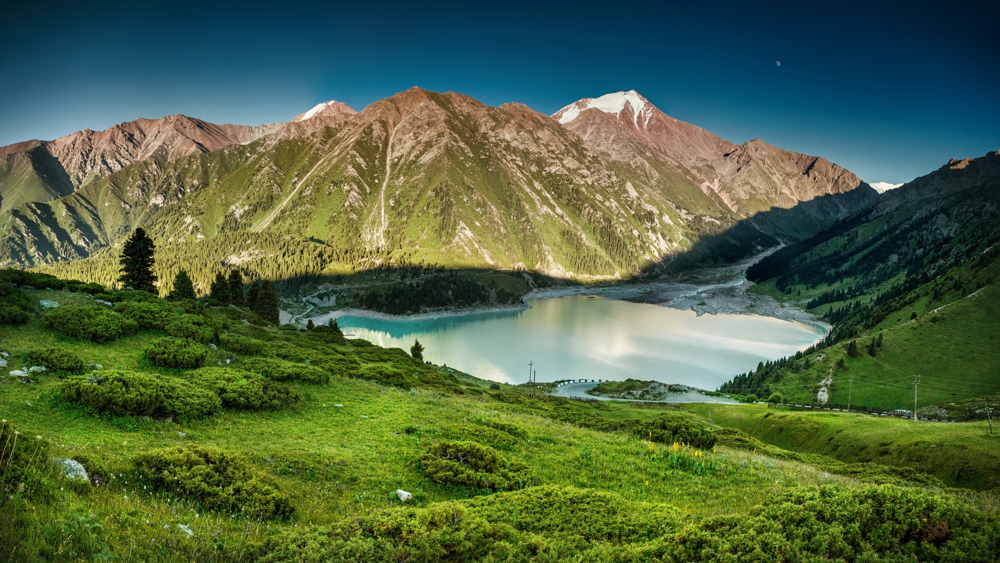
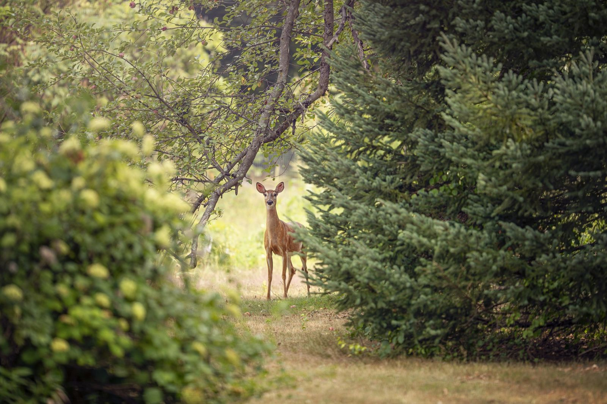

Животные
Животный мир Алматы и Алматинской области очень многообразен благодаря своему уникальному географическому положению. Но именно горные и степные районы изобилуют количеством редких и удивительных животных. И немногие знают, что в горах Заилийского Алатау, вблизи столицы Казахстана, в бассейнах рек Талгар и Иссык, на высоте 1400-4974 м над уровнем моря, расположен Алматинский заповедник, занимающий территорию площадью в 90,0 тыс. га. На его территории насчитывается 961 вид растений и 38 видов животных.
Природа
В Алматы множество пейзажей абсолютно на любой вкус, которые понравятся самому заядлому путешественнику. Здесь имеются красивейшие Алматинские озера, или как их называют голубые озера. Это кристально чистые водоемы, вода в них прозрачная и в зависимости от времени года они меняют свой цвет, самые популярные это озера Шалкар, Каинды, Кольсай и Алаколь. Также есть озеро Джасыл-Коль, находящиеся в Северном Тянь-Шане на высоте 3116 метров над уровнем моря, путь до этого озера проходит через Левый Талгар, где потрясающие воображения природные ландшафты Алматы.
Горы
Горы - это всегда особый мир, где все немного по-другому. Поднимаясь вверх по горному серпантину, попадаешь во что-то нереальное: справа и слева - величественные вершины со снежными склонами и голубыми тянь-шаньскими елями. Удивительно, но ели здесь действительно одеты в густую хвою пастельного голубого цвета, создающего сказочную атмосферу.
 




